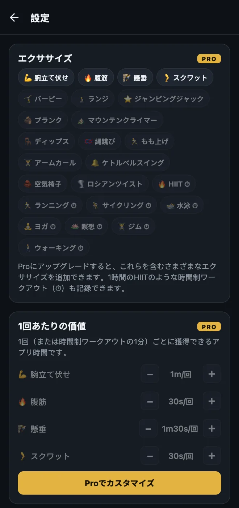
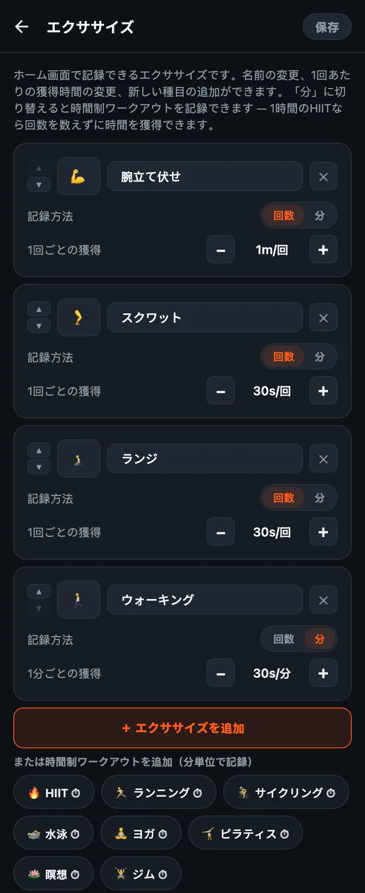

HonorFitのエクササイズをカスタマイズする方法
どうも！HonorFitは、もともと僕が自分のために作った腕立て伏せアプリブロッカー（英語）です。Instagramは腕立て伏せをするまでロックされたままで、回数は自己申告制で自分で記録します（カメラは使いません）。最初から入っているエクササイズは、腕立て伏せ、腹筋、懸垂、スクワットの4つです。
でも、みんながみんな腕立て伏せをやりたいわけではないですよね。手首が痛くなる人もいれば、バーピーのほうがいい人もいるし、今日はもう8km走ったからそれをカウントしたい、という人もいると思います。もっともです。なので、全部変えられるようにしてあります。具体的なやり方と、無料でできること・Proが必要なことをまとめておきます。
無料でできること、Proでできること
先に正直に言っておくと、エクササイズの変更はPro機能です。無料版で使えるのは最初から入っている4つのエクササイズで、値は次のとおりです。
| エクササイズ | 1回ごとの獲得（初期設定） |
|---|---|
| 💪 腕立て伏せ | 1分 |
| 🔥 腹筋 | 30秒 |
| 🧗 懸垂 | 1分30秒 |
| 🦵 スクワット | 30秒 |
無料版では、ホイールで記録できるのは1セット20回まで、貯めておける時間は一度に20分までです。アプリのブロック、回数の記録、統計はずっと無料です。
Proは月額3ドル、または買い切りで19.99ドルです（これは米国での価格です。価格は国や通貨によって違い、ストアにはお住まいの地域の通貨で表示されます）。エクササイズの追加・名前変更・削除、1回ごとの獲得時間の変更、時間制ワークアウトの「分」での記録ができるようになり、ホイールは1セット100回まで、20分の上限もなくなります。Proにはほかにも機能がありますが、この記事ではエクササイズの話だけにしておきます。

1. エクササイズの編集画面を開く
- ホーム画面右上の歯車をタップして「設定」を開きます。
- いちばん上のエクササイズカードをタップします。
エクササイズごとにカードが1枚ずつ並んでいます。ここで変えた内容は、右上の保存をタップするまで反映されないので、気軽にいろいろ触ってみてください。保存せずに戻れば、何も変わりません。

2. 名前や絵文字を変える
名前をタップして、好きな名前を入力するだけです。実際にやっているのがそれなら、「腕立て伏せ」を「膝つき腕立て」や「壁腕立て伏せ」に変えてしまってかまいません。アイコンを変えるには、左側の絵文字の四角をタップして一覧から選びます（フィットネスっぽい絵文字が40個くらいあります）。
細かい話ですが、標準のエクササイズ名はアプリの言語に合わせて表示されます。たとえばスマホが英語なら、「スクワット」は英語で表示されます。一度名前を変えると、入力したとおりに表示されます。
3. 1回ごとに獲得できるスクリーンタイムを決める
各エクササイズの下に1回ごとの獲得があり、−と+のボタンで調整できます。1回押すごとに5秒ずつ変わり、最小は5秒です。バーピーは1分30秒、ジャンピングジャックは10秒、というふうに、自分が納得できる値にしてください。
編集画面を開かずに値だけ変えることもできます。設定の「エクササイズ」カードのすぐ下に1回あたりの価値というセクションがあって、同じ−/+ボタンが並んでいます。
4. エクササイズを追加する
方法は2つあります。
- 「＋ エクササイズを追加」をタップする。「新しいエクササイズ」という名前で、1回30秒のカードが追加されます。名前を変えて、値を設定してください。
- 候補をタップする。ボタンの下に定番の種目が並んでいて、ワンタップで追加できます：バーピー、ランジ、ジャンピングジャック、プランク、マウンテンクライマー、ディップス、縄跳び、もも上げ、アームカール、ケトルベルスイング、空気椅子、ロシアンツイスト。こちらも最初は1回30秒です。追加した種目は候補から消えます。
エクササイズごとにホーム画面にホイールが1つずつ出るので、4つくらいにしておくのがおすすめです。それより多いと、使いたいホイールを探してスクロールすることになります。
5. 時間制ワークアウトを記録する（回数ではなく「分」で）
いちばんよく聞かれるのがこれです。ウォーキング、ヨガのクラス、ランニング、ジムで1時間、のように、回数では数えられない運動もありますよね。各カードには記録方法：回数 | 分の切り替えがあります。分にすると、そのホイールは分を数えるようになり、値も1分ごとの獲得に変わります。
ワンタップで追加できる時間制の候補もあります（⏱がついています）：HIIT、ランニング、サイクリング、水泳、ヨガ、瞑想、ジム、ウォーキング。
新しい時間制ワークアウトは1分あたり30秒から始まるので、HIITを1時間やればアプリ時間30分です。ひとつ注意があって、エクササイズを「回数」と「分」で切り替えると、値は30秒に戻ります。「1回で1分」と「1分で1分」はだいぶ話が違うからです。切り替えたあとに、もう一度設定し直してください。
ホイールは1分単位で数えるので、30秒のプランクは「分」にはあまり向きません。こういうキープ系の種目は「回数」のままにして、1回の意味を自分で決めるのがいいと思います（たとえば「20秒キープで1回」）。
6. 削除する、または最初からやり直す
- カードの✕をタップすると、そのエクササイズを削除できます。最低1つは残しておく必要があります。
- いちばん下の初期設定に戻すで、最初の4つのエクササイズと元の値に戻せます。ほかの操作と同じく、「保存」をタップするまでは反映されません。
値の決め方
この値は、言ってみればアプリの「値段」です。目指すのは、ごまかさずにちゃんと払える値段です。目安をいくつか挙げておきます。
- きつい種目ほど高く。懸垂とバーピーは1分30秒、腕立て伏せは1分、スクワットとランジは30秒。
- 時間制は半分くらいに。1分あたり30秒なら、20分のウォーキングで10分スクロールできます。いちばん身につけたい習慣がウォーキングなら、1分あたり1分に上げてもいいと思います。
- 回数をごまかしそうになったら、値段を下げる（1回の価値を上げる）。自己申告制での僕のルールです。やっていない回数を記録してしまうのは、値段が合っていないということで、あなたがダメなわけではありません。
- ハードモード（Pro）なら、ホーム画面上部のボタンひとつで全部の値が半分になります。全部を編集し直さずに、今日はきつめにしたい、というときに。
具体的な組み合わせのアイデアがほしい人向けに、記事をあと2つ書きました：ケーゲル体操とヒップリフトでロックを解除する話と、腕立て伏せが苦手な人向けの、体にやさしいエクササイズです。
HonorFit Blockerは、iPhoneとAndroid向けの無料アプリブロッカーです。自己申告制で、カメラは使わず、データはスマホの外に出ません。エクササイズのカスタマイズはPro機能です。万人向けではありませんが、気に入ってくれる人もいたらうれしいです！